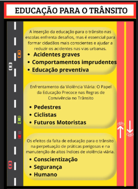

Temas para redação do enem Educação para o trânsito:

Os desafios da conscientização sobre a educação para o trânsito no Brasil
Possíveis recortes temáticos:
A negligência com a educação para o trânsito nas escolas.
O papel das campanhas públicas e sua eficácia na mudança de comportamento.
A banalização das infrações de trânsito no cotidiano urbano.
O impacto da imprudência no trânsito sobre a coletividade (vítimas, sistema de saúde, economia).
A relação entre formação cidadã e responsabilidade no trânsito.
Argumentos:
1.Argumento de autoridade
Segundo a Organização Mundial da Saúde (OMS), o trânsito é uma das principais causas de morte no mundo, sendo responsável por cerca de 1,3 milhão de óbitos anuais. Especialistas afirmam que políticas educativas eficazes são fundamentais para reduzir esses números, tornando os condutores e pedestres mais conscientes sobre seu papel na segurança viária.
2.Argumento histórico
No Brasil, a obrigatoriedade do uso do cinto de segurança foi estabelecida em 1997, com a criação do Código de Trânsito Brasileiro (CTB). Antes disso, o número de mortes no trânsito era ainda maior. A implementação dessa medida demonstrou que a educação e a legislação podem transformar hábitos e salvar vidas, reforçando a importância de novas estratégias educativas no trânsito.
3.Argumento de exemplificação
Diariamente, vemos casos de motoristas que desrespeitam sinais vermelhos, ultrapassam em locais proibidos ou dirigem alcoolizados, colocando em risco suas vidas e a de terceiros. Um exemplo notório foi o acidente causado por um condutor embriagado em São Paulo, que resultou na morte de uma família inteira. Esses casos ilustram a necessidade urgente de uma formação mais rigorosa e de campanhas educativas contínuas.
4.Argumento de comparação
Países como Suécia e Holanda reduziram drasticamente o número de mortes no trânsito ao investir em programas educativos e infraestrutura segura. No Brasil, no entanto, a alta taxa de mortalidade no trânsito ainda é reflexo da negligência com a educação viária, o que demonstra a necessidade de mudanças urgentes nesse setor.
5.Argumento por raciocínio lógico
Se a falta de conhecimento sobre as leis de trânsito leva a comportamentos imprudentes, então a implementação de uma educação obrigatória desde a escola deve, consequentemente, formar cidadãos mais responsáveis no trânsito, reduzindo acidentes e fatalidades.
6.Argumento por causa e consequência
A ausência de uma educação contínua sobre segurança viária faz com que muitos condutores e pedestres desconheçam ou ignorem as normas de trânsito. Como consequência, o Brasil registra altos índices de acidentes e mortes nas vias. Caso medidas educativas mais rigorosas não sejam adotadas, essa situação tende a se agravar, impactando não apenas as vítimas diretas, mas também o sistema de saúde e a economia do país.